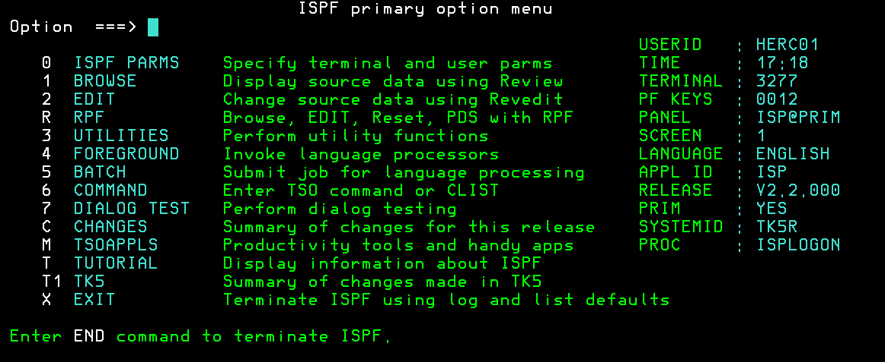

Setting up the environment
So you've decided to get into mainframes and are puzzled on where and how to start. I am also puzzled which is why made these notes.
What you'll need- A mainframe emulator. I'll be using the Hercules emulator
- An operating system, here it'll be MVS Tk5
- A terminal emulator for interacting with the mainframe emulator. I'll be using x3270
Here'll you'll find a containerized version of MVS Tk5 running on Hercules. If you have a linux-machine, but no docker, you can just follow the commands in the dockerfile. If you're on windows/mac OS and do not have a docker installation, you're on your own.
For getting started with MVS Tk5, read something like this. I won't be going through the UI so the rest you'll have to google/figure out.
If you see this after running `docker compose up` and logging in, you're good to go.
